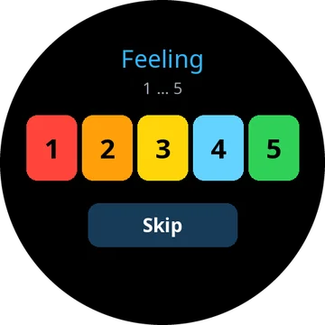
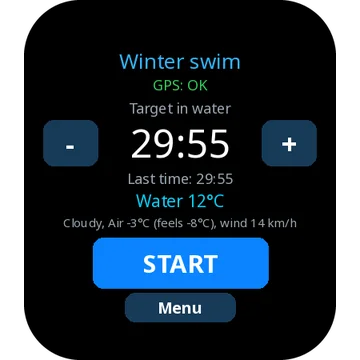

Cold Dip
Eisschwimmen, Kaltbaden und Sauna — auf deiner Amazfit-Uhr gemessen, mit Herzfrequenz, GPS und Verlauf.
Die App ist eingereicht und wird geprüft. Wenn sie angenommen ist, öffnet dieser Knopf den Eintrag im Zepp App Store.
7 Tage kostenlos mit allen Funktionen, danach einmalig 4,99 USD über KiezelPay. Kein Abo.
So funktioniert’s
Ein kurzer Blick auf eine Einheit, vom Startbildschirm bis zum Gefühl danach.
Die Einheit ansehen
- Öffne Cold Dip am Ufer. Stelle die Wassertemperatur mit − / + ein und drücke START.
- Am Ufer: der Timer läuft, während du dich fertig machst. Drücke, wenn du ins Wasser gehst.
- Im Wasser: Zeit im Wasser, Herzfrequenz, Wassertemperatur und GPS beim Freiwasserschwimmen. Drücke, wenn du rausgehst.
- Nach dem Rausgehen: Zeit seit dem Verlassen des Wassers und ein Countdown zum Aufwärmen (Afterdrop).
- Sauna, wenn du eine nutzt: die App misst die Runde, danach zurück ins Wasser oder fertig.
- Wie du dich fühlst, 1–5, dann speichern. Verlauf und Rekorde bleiben auf der Uhr.
Screenshots
Dieselbe Einheit auf einer runden und einer eckigen Amazfit-Uhr.
Runde Uhren

Start 
Am Ufer 
Im Wasser 
Nach dem Rausgehen 
Sauna 
Gefühl
Eckige Uhren

Start 
Am Ufer 
Im Wasser 
Nach dem Rausgehen 
Sauna 
Gefühl
Preis
Die ganze App ist kostenpflichtig — es gibt später kein getrenntes „Pro“-Freischalten.
- 7 Tage kostenlos mit allen Funktionen, ab dem ersten Öffnen der App.
- Danach eine einmalige Freischaltung für 4,99 USD über KiezelPay (kzl.io). Die Uhr zeigt einen Code; du bezahlst im Browser.
- Kein Abo. Die App sieht keine Kartendaten. Die Zahlung übernimmt KiezelPay.
Unterstützte Amazfit-Uhren
Cold Dip läuft auf Zepp OS 3 (API 3.0) und neuer. Die genaue Modellliste zeigt der Store, sobald Zepp das Paket angenommen hat.
- Balance Balance, Balance 2, Balance 2 XT, Balance 3, Balance Ultra
- Active Active, Active 2 (round and square), Active 3 Premium, Active Edge, Active Max
- T-Rex T-Rex 3, T-Rex 3 Pro, T-Rex Ultra, T-Rex Ultra 2
- Cheetah Cheetah (round and square), Cheetah Pro, Cheetah 2 Pro, Cheetah 2 Ultra
- GTR / GTS / Falcon GTR 4, GTS 4, Falcon
- Bip Bip 5 Unity, Bip 6, Bip Max
Die Bip 5 Unity hat kein GPS. Profile mit Route zeigen „Suche GPS…“; der Rest der App funktioniert.
Nicht unterstützt (älteres Zepp OS): GTR 3, GTS 3, GTS 4 Mini, GTR Mini, Bip 5 (ohne Unity), T-Rex 2 und Band 7.
Datenschutz und Wetter
Kein Konto, keine Analyse, keine Werbung. Herzfrequenz, GPS und dein Verlauf bleiben auf der Uhr.
Wenn das Handy verbunden ist, kommt das Wetter (Lufttemperatur, Wind, Lage) von MET Norway Locationforecast 2.0, unter CC BY 4.0. Es wird nur eine ungefähre Position an api.met.no geschickt. Quelle: © MET Norway (CC BY 4.0).